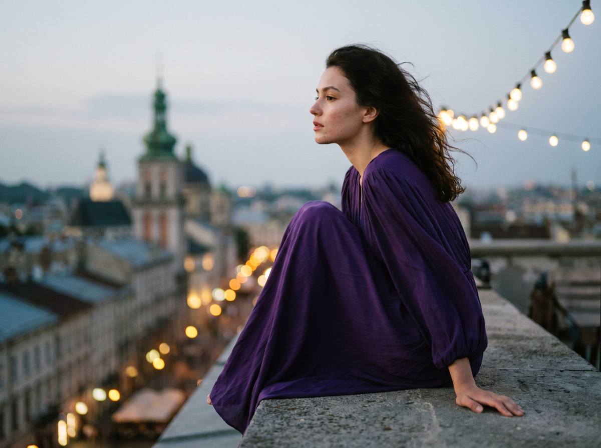
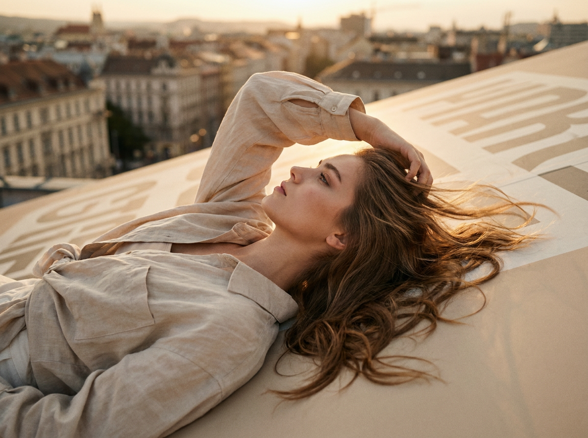
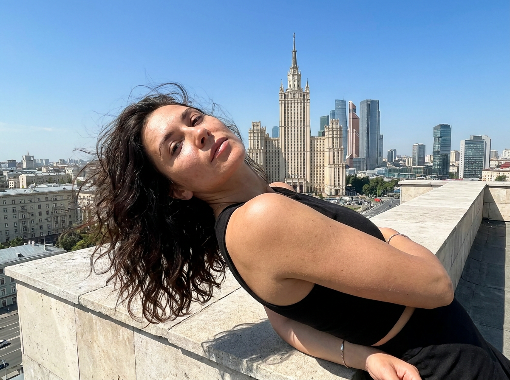
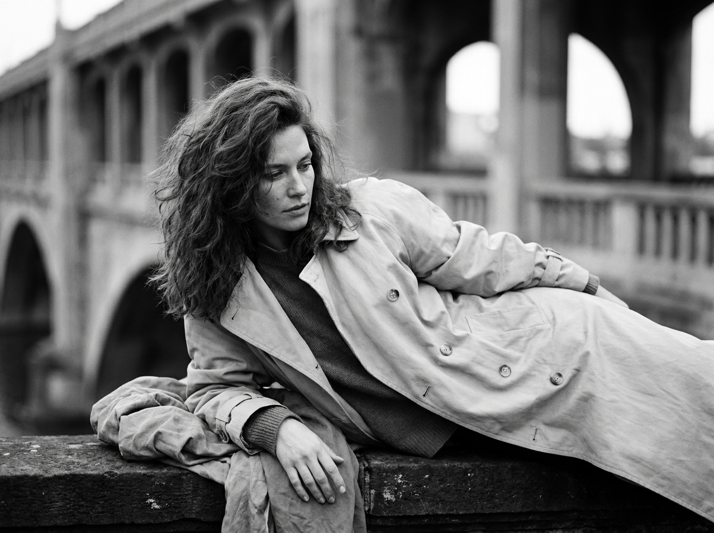
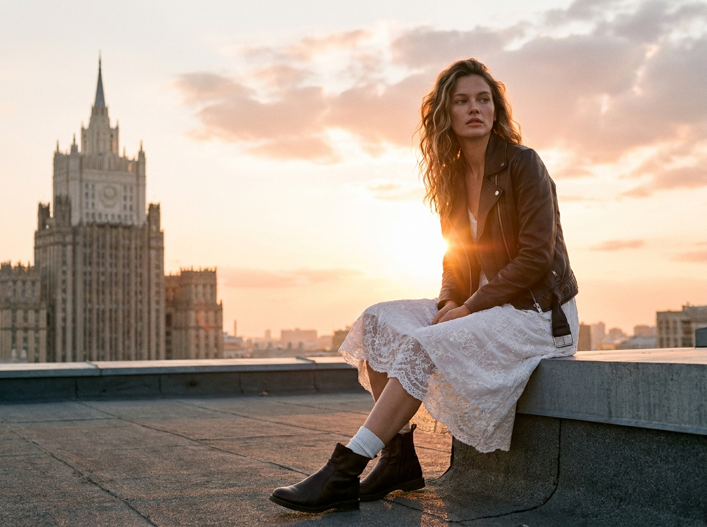
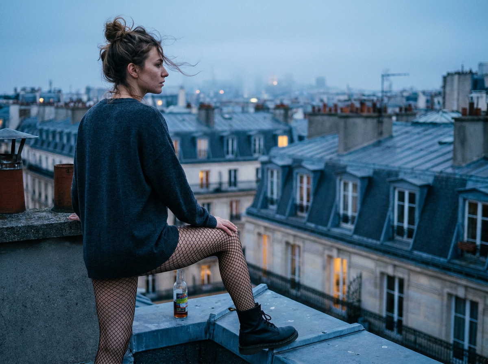
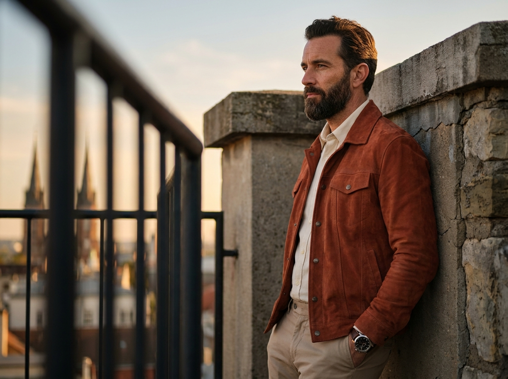
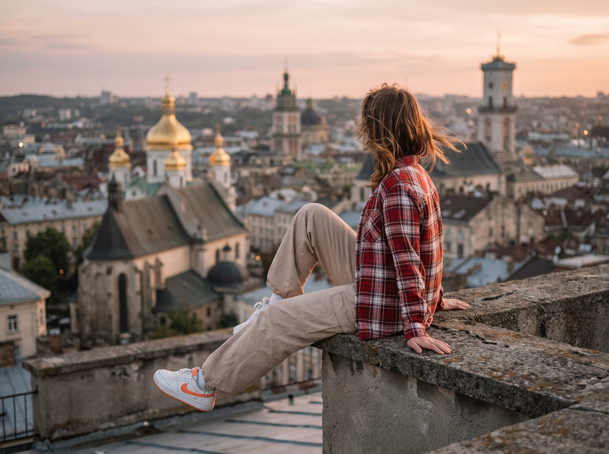
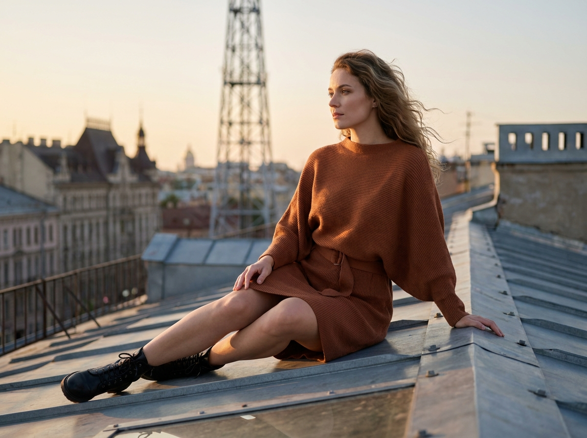
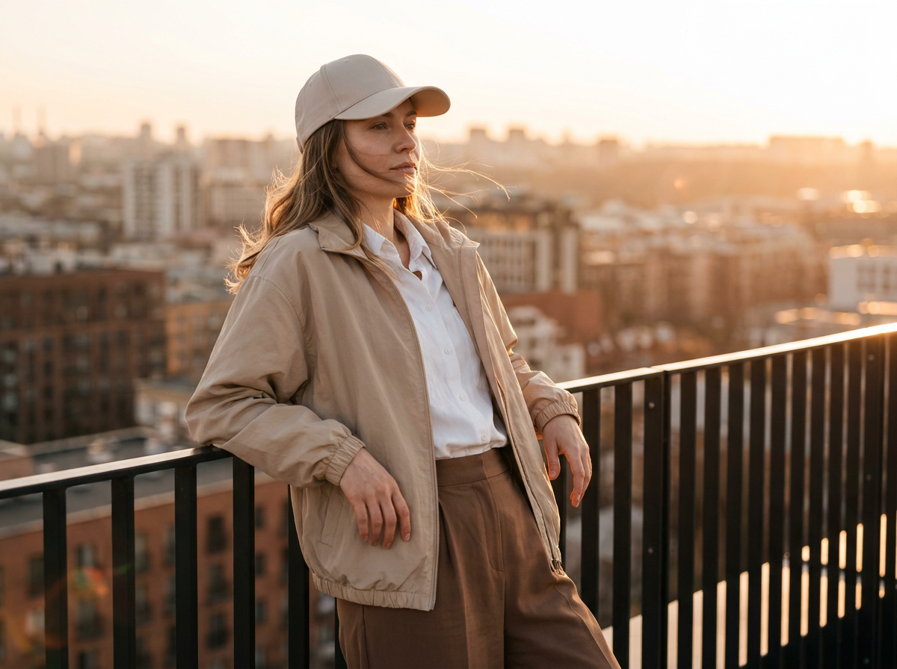

ИИ-Фото на крыше: 10 промптов для нейросети

Крыша в кадре часто превращается в пустой бетонный фон: модель теряется, город выглядит ненатурально, а поза ломается. Грамотная генерация помогает заранее задать ракурс, свет, глубину резкости и настроение снимка.
В подборке — десять сценариев для fashion- и lifestyle-кадров: от спокойного профиля на бетонной террасе до мужского портрета у ограждения, панорамы исторического города и съёмки в синих сумерках.
Как сгенерировать такое фото: пошагово
Нужен снимок анфас при ровном свете, лицо в кадре целиком, без тёмных очков и головных уборов. Разрешение от 1000 пикселей по короткой стороне. Чем чётче исходник, тем точнее модель повторит черты.
Выберите сценарий ниже и нажмите «Копировать» — текст уйдёт в буфер целиком, вместе с командой сохранения внешности. Эта команда стоит первой строкой и отвечает за то, чтобы на выходе было ваше лицо, а не случайное.
Кнопка «Сгенерировать» рядом с каждым промптом открывает модель в новой вкладке. Nano Banana Pro работает с референсом лица — в отличие от моделей, которые генерируют портрет с нуля и узнаваемость теряют.
Промпт — в поле ввода, портрет — через загрузку референса. Порядок значения не имеет, но без референса команда сохранения внешности работать не будет: модели нечего сохранять.
Для сторис и ленты берите 9:16, для превью и обложек — 4:3. Первый результат редко идеален: если поза или свет ушли не туда, поправьте соответствующую часть промпта и запустите заново. Обычно хватает двух-трёх итераций.
10 промптов для генерации
1. Профиль на бетонной крыше
Строго сохранить внешность по загруженному референсу: черты лица, пропорции, мимику и текстуру кожи без изменений. Фотореалистичная street-fashion editorial фотография на плоской бетонной крыше вечером. Серо-тёплая кинематографичная палитра, мягкая дымка, сильное боке далёких городских огней, натуральная фактура кожи и волос. На крыше есть низкие металлические ограждения и решётчатые секции. Камера установлена примерно на уровне колен или пояса, объектив 50 мм, малая глубина резкости. Молодая женщина 18–30 лет сидит в нижней части вертикального кадра, немного левее центра, лицом в профиль и спиной в 3/4. Ноги согнуты и поджаты, корпус вытянут вперёд и слегка развернут вправо. Одна рука опирается на бетон, пальцы хорошо видны, вторая свободно лежит рядом с корпусом. Она спокойно смотрит вдаль на город, выражение задумчивое и собранное. Реалистичная анатомия, естественная поза, мягкий вечерний контраст, без лишней ретуши.
2. Диагональ над городом

Строго сохранить внешность по загруженному референсу: черты лица, пропорции, мимику и текстуру кожи без изменений. Кинематографичная фотореалистичная fashion editorial на верхней площадке с видом на город во время заката. Передний план занимает огромная светло-бежевая поверхность, похожая на верх или боковую часть крышки большого объекта; на ней заметен графичный абстрактный рисунок без читаемых слов. Молодая женщина 20–30 лет лежит или полулежит по диагонали, камера расположена сбоку и немного сверху, объектив 35 мм. Тело направлено по линии перспективы, взгляд уходит к городским улицам внизу. Лицо видно в профиль, рот расслаблен, выражение между лёгкой улыбкой и нейтральным спокойствием. Волосы сильно развеваются ветром, отдельные пряди естественно отделяются друг от друга. Тёплый vintage-колорит, лёгкое плёночное зерно, малая глубина резкости, реалистичные ткани, волосы и кожа, мягко подсвеченный город на фоне.
3. Диагональная поза над центром

Строго сохранить внешность по загруженному референсу: черты лица, пропорции, мимику и текстуру кожи без изменений. Вертикальный фотореалистичный fashion-кадр на крыше высокого здания при ясном дневном свете. Слева на переднем плане проходит светлый каменный или бетонный парапет, его край виден снизу и вдоль левой границы. На фоне — городской центр с естественной воздушной перспективой: вдалеке доминирует высотное здание со шпилем и классическим сталинским или ампирным фасадом, по бокам стоят другие небоскрёбы. Женщина лежит по диагонали от нижнего левого к верхнему правому углу, занимая левую и центральную части изображения. Камера находится немного ниже, почти на уровне парапета, объектив 40 мм, перспектива динамичная, но лицо без сильных искажений. Поза расслабленная, ветер подхватывает волосы и отдельные пряди. Кинематографичная цветокоррекция, правдоподобные тени и отражения, чёткая фактура одежды, натуральная кожа, реалистичная городская глубина.
4. Монохромный портрет на парапете

Строго сохранить внешность по загруженному референсу: черты лица, пропорции, мимику и текстуру кожи без изменений. Фотореалистичный чёрно-белый editorial-портрет в духе ретро-кино и fine art. Строгая монохромная палитра, полный диапазон серых тонов, лёгкое плёночное зерно, выразительная фактура ткани и волос. Женщина снята крупно или средне-крупно, камера стоит на уровне плеч либо немного ниже лица, объектив 85 мм. Она лежит или откинулась назад на тёмной поверхности парапета, тело выстроено по диагонали. Голова наклонена набок, часть лица погружена в тень, взгляд направлен вниз и в сторону, не в объектив. В кадре видна верхняя часть тела и руки; одна кисть лежит на ткани рядом с корпусом, пальцы анатомически правильные. Волосы объёмные, слегка растрёпанные, с отдельными натуральными прядями. Настроение спокойное, расслабленное, с уверенным fashion-attitude, без обязательной улыбки. Чёткие светотеневые переходы, никаких цветных оттенков и деформаций.
5. Закат у сталинской высотки

Строго сохранить внешность по загруженному референсу: черты лица, пропорции, мимику и текстуру кожи без изменений. Фотореалистичный cinematic rooftop portrait в жанре fashion editorial на бетонной террасе во время вечернего заката. Низкий каменный или бетонный парапет проходит по кадру и ведёт взгляд к горизонту. Слева на дальнем плане возвышается здание с характерной сталинской архитектурой и острой шпилевидной вершиной. Женщина 20–35 лет сидит справа в нижней половине изображения, полусвернувшись на бортике: одно колено согнуто, вторая нога вытянута вниз, обувь и линия ног хорошо различимы. Камера установлена немного ниже уровня пояса, объектив 50 мм, чтобы подчеркнуть масштаб города. Объёмные волосы длиной до плеч или чуть ниже свободно движутся на ветру, их задняя часть подсвечена солнцем. В кадре заметен сильный sun flare, золотистый контровой свет и мягкая дымка. Высокая детализация ткани, волос и бетона, естественная анатомия, мягкое кинематографичное боке.
6. Синие сумерки над Парижем

Строго сохранить внешность по загруженному референсу: черты лица, пропорции, мимику и текстуру кожи без изменений. Фотореалистичная urban-fashion фотография на крыше европейского города, снятая в blue hour. Синеватые сумерки, кинематографичный рассеянный свет, мягкая атмосферная дымка, реалистичная архитектура, высокий уровень детализации. Вокруг видны мансардные крыши, слуховые окна, трубы и вентиляционные элементы; на переднем плане — край крыши с грубой фактурой, швами и следами эксплуатации. Женщина занимает левую треть кадра, стоит или полусидит рядом с краем, показана со спины и в профиль: видны затылок и профиль лица, повернутого вправо. Она смотрит вдаль по крышам, городская перспектива раскрывается преимущественно справа и уходит в глубину. Камера находится рядом, на уровне человека, объектив 50 мм, фокус на модели, дальние дома мягко размыты, но остаются узнаваемыми. Спокойная поза, естественные волосы и одежда, без чрезмерного HDR.
7. Мужчина у городской стены

Строго сохранить внешность по загруженному референсу: черты лица, пропорции, мимику и текстуру кожи без изменений. Фотореалистичный киношный editorial lifestyle-кадр в эстетике street elegance. Мужчина 30–45 лет стоит или полусидит на крыше, боком опираясь на каменную либо бетонную стену. Он занимает правую центральную часть изображения, снят в профиль 3/4: голова повернута влево, взгляд уходит вдаль, выражение спокойное, уверенное и немного задумчивое. На переднем плане слева расположено металлическое ограждение с вертикальными прутьями; оно частично перекрывает пейзаж и слегка размыто, создавая глубину. За моделью — множество городских крыш, а далеко в дымке угадывается силуэт шпиля. Объектив 85 мм, открытая диафрагма f/1.8, резкость на глазах и лице, ограждение и фон растворяются в красивом боке. Волосы слегка объёмные, аккуратно уложенные, борода или щетина густая и ухоженная, коричнево-тёмного оттенка. Натуральная кожа с реалистичной текстурой, без макияжа, мягкий естественный свет.
8. Панорама с золотыми куполами

Строго сохранить внешность по загруженному референсу: черты лица, пропорции, мимику и текстуру кожи без изменений. Фотореалистичная travel-fashion фотография на крыше во время golden hour. Серое цементное покрытие и высокий наклонный бортик занимают передний план; на бетоне видны стыки, мелкие трещины и следы эксплуатации. В левой нижней части женщина сидит или полулежит на парапете спиной к камере, лицо и корпус направлены к историческому центру, взгляд уходит вдаль. Ноги слегка согнуты, одна вытянута вперёд, руки опираются на поверхность крыши. По диагонали открывается панорама города с золотыми куполами и высокими храмовыми башнями. Передний план с моделью резкий, дальняя архитектура мягче, но остаётся читаемой. Камера на уровне крыши, объектив 35 мм, мягкое боке без полного размытия фона. Тёплый солнечный свет, реалистичные ткани одежды, натуральная кожа, точная фактура бетона, спокойное путешественническое настроение.
9. Закат на металлической крыше

Строго сохранить внешность по загруженному референсу: черты лица, пропорции, мимику и текстуру кожи без изменений. Вертикальная фотореалистичная fashion editorial в жанре city sunset lifestyle. Модель находится на высоком уровне крыши с металлическим или черепичным покрытием. В передней части кадра заметна тёмная поверхность с крупными сегментами, швами и болтами, справа стоят металлические элементы и вентиляционные колпаки. Женщина занимает левую и центральную зоны, сидит полусидя, корпус немного наклонён вперёд. Одна нога согнута, другая вытянута или полусогнута так, чтобы колено и обувь читались естественно. Тело развёрнуто к объективу на 3/4, лицо повернуто влево, взгляд спокойный и слегка задумчивый, не в камеру. Камера установлена на уровне модели, объектив 50 мм, открытая диафрагма f/2.2, фон мягко уходит в боке. Премиальная кинематографичная цветокоррекция, золотистый закат, реалистичная кожа и ткань, точная анатомия, естественные складки одежды.
10. Ветер у городских перил

Строго сохранить внешность по загруженному референсу: черты лица, пропорции, мимику и текстуру кожи без изменений. Фотореалистичная fashion editorial в жанре street lifestyle на крыше или балконе с панорамой мегаполиса. Съёмка проходит в golden hour: тёплый кинематографичный свет, мягкое боке дальних домов, натуральные текстуры кожи и ткани. Женщина 20–35 лет занимает левую и центральную части вертикального кадра, стоит у металлического ограждения с чёрными вертикальными прутьями. Она опирается одной или обеими руками на верхнюю планку, корпус слегка выдвинут вперёд. Камера расположена на средне-низком уровне, примерно между талией и грудью, объектив 50 мм, чтобы усилить перспективу города без сильной деформации. Лицо повернуто влево, взгляд направлен к горизонту, мимо камеры; выражение спокойное, немного задумчивое, губы расслаблены. Лёгкий ветер развевает прямые или слегка волнистые волосы, оживляет ткань куртки и верхние складки одежды. Натуральная кожа, умеренная ретушь, точные руки и пальцы, реалистичный городской фон.
Что важно учесть в этом стиле
Рooftop-кадр держится на контрасте: модель должна оставаться главным объектом, а город — работать как масштаб и настроение. Для портрета выбирайте объектив 50–85 мм, для панорамы — 28–35 мм. Открытая диафрагма около f/1.8–f/2.8 даст боке, но не скроет архитектурные ориентиры полностью.
Поза должна быть описана через опорные точки: где находятся руки, как согнуты ноги, куда развёрнут корпус. Для крыш особенно полезны слова «реалистичная анатомия», «естественный баланс» и «без опасного зависания над краем». Свет тоже лучше задавать конкретно: контровой golden hour, рассеянный blue hour или мягкий вечерний источник сбоку.
Идеи для вариаций
- Заменить мегаполис на портовый город с кранами и водой вдалеке.
- Добавить дождь после заката, мокрый бетон и отражения в лужах.
- Сделать серию в одной одежде: профиль, сидячая поза и кадр у перил.
- Перевести сцену в раннее утро с молочным туманом вместо дымки огней.
- Попросить нейросеть сохранить композицию, но сменить объектив с 85 мм на 35 мм.
- Добавить реквизит: складной стул, стакан кофе или винтажную камеру.
Как собрать свой промпт
Сначала задайте формат и жанр: вертикальный fashion-портрет, street lifestyle или travel editorial. Затем опишите крышу, положение модели, направление взгляда и ключевой фон. После этого добавьте свет, объектив, диафрагму, глубину резкости и требования к фактуре кожи.
Один промпт лучше посвящать одной сцене. Если нужно изменить результат, редактируйте по одному параметру: сначала позу, затем ракурс, потом цветокоррекцию. Для серии удобно зафиксировать внешность, одежду и формат, а менять только время суток и городскую локацию.
Ошибки, из-за которых кадр не получается
- Слишком общий фон. Без конкретных крыш, парапета или шпиля город превращается в случайный набор зданий.
- Неясная поза. Если не указать опору рук и положение ног, модель часто получает лишние конечности или неестественный баланс.
- Смешанные источники света. Одновременные neon, жёсткий полдень и золотой закат дают грязный цвет кожи.
- Неподходящий объектив. Широкий угол в крупном портрете растягивает лицо и кисти, особенно у края кадра.
- Перебор с размытием. При слишком сильном боке исчезают шпиль, купола и другие ориентиры сюжета.
- Читаемые случайные надписи. Для графики на поверхности лучше просить абстрактные линии и запретить текст.
Частые вопросы
Как сделать такое ИИ-фото бесплатно?
Попробуйте Kandinsky и Шедеврум: они подходят для генерации по тексту, но могут хуже держать сложную анатомию и точную композицию. В Krea AI и Arena.ai доступны бесплатные режимы или ограниченные попытки, однако условия меняются. Референс помогает не везде: где-то можно загрузить изображение для стилизации, а где-то доступна только генерация по описанию. Не рассчитывайте на идеальное сходство с первого раза — обычно нужно 3–10 генераций и несколько правок промпта.
Как сохранить лицо и одежду во всей серии?
Используйте один референс, неизменное описание внешности и одежды, одинаковый формат кадра. Меняйте только сцену или свет. Если сервис поддерживает reference image, задайте умеренную силу влияния, иначе поза и крыша могут плохо меняться.
Как убрать лишние пальцы и сломанные ноги?
Сделайте позу проще, укажите количество видимых рук и ног, добавьте «корректная анатомия, естественные суставы, пять пальцев». Для сложного положения используйте несколько попыток и выбирайте кадр с лучшими кистями, затем исправляйте детали отдельным инструментом.
Как сделать город на фоне узнаваемым?
Назовите тип архитектуры и один главный ориентир: шпиль, купола, мансарды или силуэт небоскрёба. Укажите его положение в кадре и попросите сохранить читаемый фон при мягком боке. Слишком длинный список достопримечательностей обычно смешивает здания.